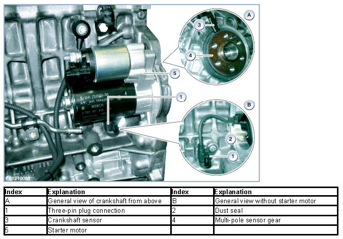
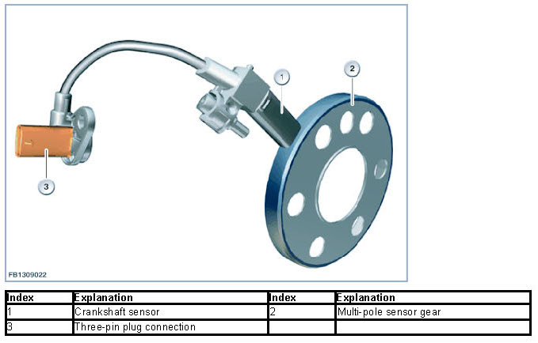
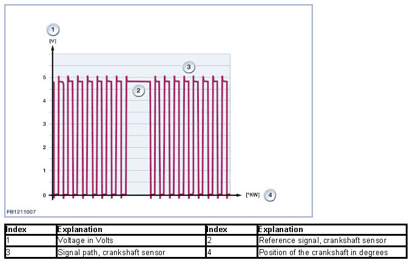
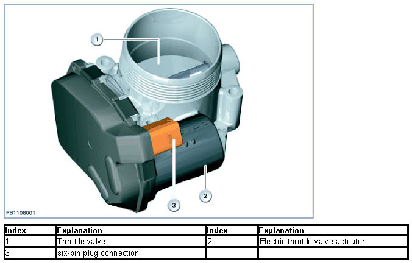
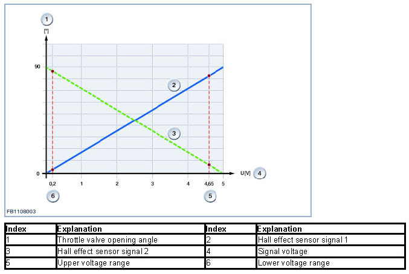
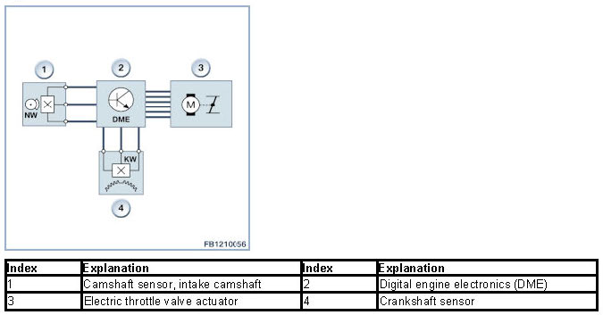

Idle Speed
Idle Speed
Idle speed
The crankshaft sensor delivers a signal regarding the position of the crankshaft to the Digital Engine Electronics (DME). The Digital Engine Electronics (DME) use this signal to calculate the engine speed. With additional information from other control units (for example, power requirement of the auxiliary components), the Digital Engine Electronics (DME) regulate a stable idle speed.
Brief component description
The following components for idle speed control are described:
- Crankshaft sensor
- Electromotive throttle actuator.
Crankshaft sensor
The crankshaft sensor is integrated in the radial sealing ring. The crankshaft sensor picks up the position of the crankshaft by means of a multi-pole sensor wheel bolted onto the flywheel. The Digital Engine Electronics (DME) uses this to calculate the engine speed. The camshaft sensor and the crankshaft sensor are needed for fully sequential fuel injection (fuel injection takes place individually optimized for each cylinder at the specific ignition point).
The signal from the crankshaft sensor means that the Digital Engine Electronics (DME) evaluate the crankshaft acceleration. The crankshaft acceleration provides an indication of the combustion quality of individual cylinders.
The multi-pole sensor gear has 58 magnetic pole pairs as well as a reference point. The reference point on the multi-pole sensor wheel is shown by a magnetic pole pair that is twice as long.
The reference point enables detection of the top dead centre of the 1st cylinder. By monitoring the individual pairs of magnetic poles, the Hall effect sensor delivers a certain number of signals to the Digital Engine Electronics (DME).
The active crankshaft sensor detects the direction of rotation of the crankshaft as well as the air gap in relation to the multi-pole sensor gear.
The following graphic shows the engine N55 as example.


The Digital Engine Electronics (DME) use the scanned signals to calculate the engine speed.
For the engine start, the Digital Engine Electronics (DME) checks the following conditions:
- error-free signal from the crankshaft sensor and camshaft sensor
- both signals must be detected in a specific chronological sequence.
This process is referred to as synchronization and is only performed when the engine is started. Only the synchronization enables Digital Engine Electronics (DME) to activate the fuel injection correctly. The engine will not start without synchronization.
If the crankshaft sensor signals fails (with the 1st crankshaft revolution) or an invalid synchronization is detected for the engine start, the diagnosis starts immediately. The camshaft sensor signals are read here. If 12 flanks on the camshaft are read and the fault is still there, a fault is stored.
The transition from a high to a low phase is signalled by a change in the magnetic field. These changes are counted in the Digital Engine Electronics (DME). The difference between 2 changes of the magnetic field is 6° crank angle.

Electromotive throttle actuator
The electrical throttle valve actuator motor is attached to the intake air collector. The Digital Engine Electronics (DME) use this to calculate the position of the throttle valve:
- Position of the accelerator pedal module
- Torque request from other control units.
The Digital Motor Electronics (DME) opens or closes the electromotive throttle actuator electrically.
The throttle valve opening angle in the electromotive throttle actuator is monitored by 2 hall effect sensors.
The throttle valve is moved by an electric actuator motor. This servomotor is actuated by a pulse-width modulated signal with a frequency of 1000 Hz.

The throttle valve has a mechanical adjustment range of 0 to 90°. The maximum position that is actually moved to is 81° (corresponds to 100 % throttle valve opening ).
In the de-energized state, the throttle valve is held in the emergency running position of approx. 5.2° by 2 throttle return springs. These two springs also ensure that the throttle valve is returned to this position if a fault develops (activation deactivated).
The Digital Motor Electronics (DME) uses the actual position measured to convert the required throttle valve opening setpoint into a signal.
The diagnosis monitors the two hall effect sensors. The electrical function (short circuit to ground, short circuit to B+ and line disconnection) and plausibility of the sensor signal are monitored.
The diagnosis runs continuously as soon as the following preconditions are satisfied:
- Terminal 15 on
- No electrical fault detected.
The Digital Motor Electronics (DME) receives a measured value of between 0 and 5 volts from the hall effect sensor. With the aid of the learned lower stop and a codable slope, the Digital Motor Electronics (DME) converts this voltage into the throttle valve opening angle. The diagnosis monitors the two signals with reference to a lower and upper voltage range.

System overview

System functions
The following system functions are described:
- Idle speed control
Idle speed control
For idle speed control, the Digital Engine Electronics (DME) control the following factors:
- Air mass (via Valvetronic and electrical throttle-valve actuator)
- Injected fuel quantity
- Point of ignition.
The set engine speed when idling depends on different conditions, for example coolant temperature or power requirement of the auxiliary components.
We can assume no liability for printing errors or inaccuracies in this document and reserve the right to introduce technical modifications at any time.